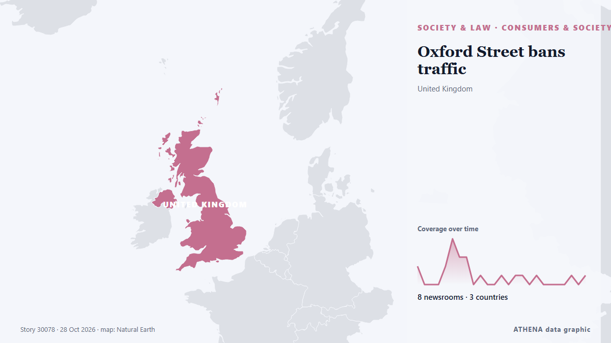

Oxford Street bans traffic

London is pedestrianizing its version of Fifth Avenue. de NPR World
Informado de forma independiente por 8 medios de 3 países desde el 25 oct; el primero fue MyLondon; la cobertura va perdiendo fuerza. ATHENA califica el riesgo como moderado (3.5/10), sobre todo por la gravedad del daño descrito y su alcance geográfico y sectorial. La confianza es del 76 % (alta): lo corroboran 8 medios independientes, con una fiabilidad media de las fuentes del 77 %. Quién lo informó: 18 medios en Reino Unido · United Kingdom, 3 medios en Estados Unidos · United States, 1 medios en Francia · France. La cobertura fue de 25 oct a 28 oct, durante 72 horas.
Por qué importa: Los cambios legales y de política modifican derechos, obligaciones y servicios públicos para las personas afectadas.
Qué ha cambiado: 3 informaciones nuevas de 2 redacciones en las 24 horas hasta el 28 oct.
Primer titular: Oxford Street pedestrianisation: All the new traffic restrictions
Los titulares se muestran en inglés, tal como se publicaron.
De un vistazo
Seleccionado, puntuado y redactado por la metodología publicada de ATHENA. Ningún editor interviene en eventos concretos. Cómo se elabora ›
| 25 Oct 16:33 UTC | 2 |
|---|---|
| 25 Oct 19:33 UTC | 0 |
| 25 Oct 22:33 UTC | 0 |
| 26 Oct 01:33 UTC | 0 |
| 26 Oct 04:33 UTC | 2 |
| 26 Oct 07:33 UTC | 5 |
| 26 Oct 10:33 UTC | 3 |
| 26 Oct 13:33 UTC | 3 |
| 26 Oct 16:33 UTC | 0 |
| 26 Oct 19:33 UTC | 1 |
| 26 Oct 22:33 UTC | 0 |
| 27 Oct 01:33 UTC | 0 |
| 27 Oct 04:33 UTC | 1 |
| 27 Oct 07:33 UTC | 0 |
| 27 Oct 10:33 UTC | 1 |
| 27 Oct 13:33 UTC | 1 |
| 27 Oct 16:33 UTC | 0 |
| 27 Oct 19:33 UTC | 1 |
| 27 Oct 22:33 UTC | 0 |
| 28 Oct 01:33 UTC | 0 |
| 28 Oct 04:33 UTC | 0 |
| 28 Oct 07:33 UTC | 0 |
| 28 Oct 10:33 UTC | 1 |
| 28 Oct 13:33 UTC | 0 |
| 28 Oct 16:33 UTC | 1 |
| 25 Oct 17:38 UTC | 3.5 |
|---|---|
| 26 Oct 07:11 UTC | 2.1 |
| 27 Oct 15:56 UTC | 3.8 |
| 28 Oct 16:40 UTC | 3.5 |
Por qué estas cifras
Importancia
Riesgo
Confianza
La cobertura: quién informó y cuándo
titular tal como se publicó · abre el original- MyLondon · Reino Unido · United KingdomPhotos of historic Oxford Street as it prepares to go pedestrian-only
- Guardian Business · Reino Unido · United KingdomThe Guardian view on Oxford Street’s pedestrianisation: cities should be designed around people, not cars | Editorial
- Guardian Business · Reino Unido · United KingdomWe’ve made Oxford Street traffic-free – and that’s just the start. Soon there’ll be green spaces for arts and music too | Sadiq Khan
- Guardian Business · Reino Unido · United KingdomHow will pedestrianisation of UK’s most famous shopping street work in practice?
- Evening Standard (London) · Reino Unido · United KingdomCan the new traffic ban save Oxford Street?
- Evening Standard (London) · Reino Unido · United KingdomSadiq Khan: Oxford Street pedestrianisation will rid road of 'dross' American candy shops
- Evening Standard (London) · Reino Unido · United KingdomOxford Street pedestrianisation: All the new traffic restrictions
- MyLondon · Reino Unido · United KingdomOxford Street pedestrianisation live as cars, bikes and buses banned for first time
- Evening Standard (London) · Reino Unido · United Kingdom'The new Oxford Street is here': Britain's most famous retail hotspot is transformed as traffic ban begins
- ABC News (International) · Estados Unidos · United StatesLondon’s Oxford Street bans traffic as city tries to revitalize shopping district
- Evening Standard (London) · Reino Unido · United KingdomCyclists caught on camera riding through Oxford Street as traffic ban comes into force
- MyLondon · Reino Unido · United KingdomOxford Street pedestrianisation sees 'surge in shops wanting to open', says Sadiq Khan
- Fortune · Estados Unidos · United States‘It’s a new era’: London’s Oxford street will close to cars, buses, and bikes in attempt to bring back glory days of shopping district
- MyLondon · Reino Unido · United KingdomPedestrianisation of Oxford Street ‘yet to begin in earnest’ as traffic banned from initial stretch
- Euronews English · Francia · FranceUK: Oxford Street pedestrianisation begins in central London
- Guardian Business · Reino Unido · United KingdomBritish people react to the pedestrianisation of Oxford Street – video
- The Guardian · Reino Unido · United Kingdom‘It’s a better experience’: shoppers praise Oxford Street pedestrianisation
- Evening Standard (London) · Reino Unido · United KingdomCyclists breaking Oxford Street traffic ban nearly every minute with no sign of fines
- Evening Standard (London) · Reino Unido · United KingdomWhy aren’t Met Police or TfL fining cyclists for breaking Oxford Street pedestrianisation rules?
- NPR World · Estados Unidos · United StatesOxford Street bans traffic
- MyLondon · Reino Unido · United Kingdom'Oxford Street pedestrianisation will make life much harder for London's black cab drivers'
- MyLondon · Reino Unido · United KingdomCamden High Street bans cars 24/7 days after Oxford Street pedestrianisation